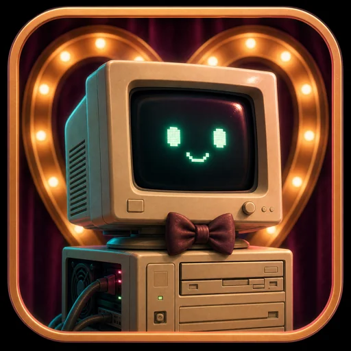
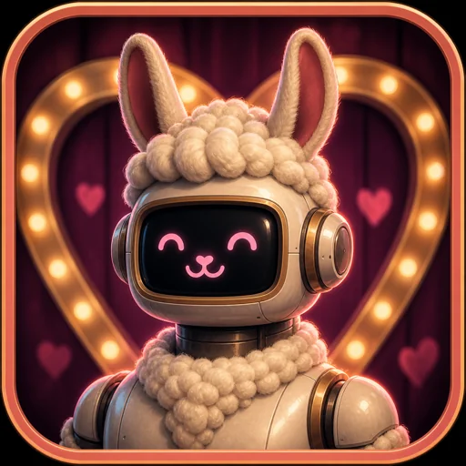
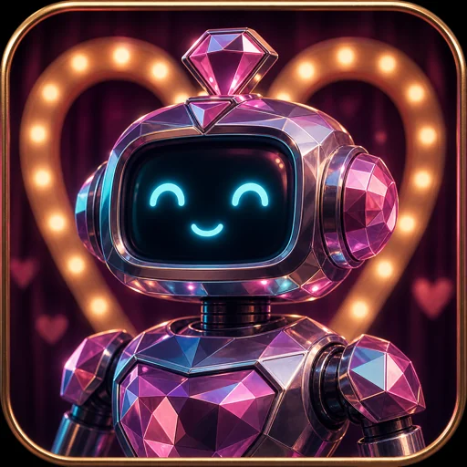
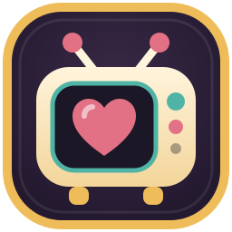

The dating show where your PC meets its perfect AIFind the AI your computer was made for.
Local models take the stage on your own PC. They answer the same questions and are timed on your hardware. One of them walks away as your Top Match, with a score measured on your machine, not taken from a leaderboard.

Llama3.2Done · 88 Qwen2.5Answering…
Qwen2.5Answering…
Gemma3Up next
Picking a local model shouldn’t take a degree in graphics memory.
It reads your PC
Graphics card, memory and disk, in one click. Only models that fit get to audition.
You pick the contestants
Say what you want: chat, writing, code, pictures. Pick up to five.
The show runs
Same questions, same stage, one at a time, timed on your hardware. Every answer is kept so you can read it.
Meet your Top Match
One score, one reason, and a button to start chatting with the winner.
Llama3.2
Gemma3 came second at 86.6 and Qwen2.5 third at 81.0. A close second may still suit you better, so chat with both.
One honest number
The Match Score blends four measurements, all taken on your computer. Slide between accuracy first and speed first and the ranking updates, without running anything again.
- Answer quality× 0.34
Checked by rules where there is a right answer, and by a judge model where there isn’t.
- Speed× 0.32
Tokens a second and time to the first word, measured on your hardware.
- Finish rate× 0.18
Whether it finishes its answers, without errors or running out of time.
- Fit× 0.16
How comfortably it sits in your memory, leaving room for everything else.
Not just chat
- Chat and writingEveryday questions, drafts and summaries.
- CodeCode questions, and an App Builder that makes something you can open.
- Tools and agentsSix working tools: it checks the model calls the right one with the right details.
- PicturesImage models in ComfyUI, the same prompt side by side.
- Video, sound and musicClips from ComfyUI’s video and audio models, with your eye and ear as the judge.
- Listening and reading picturesSpeech to text and questions about a picture, each with an answer to check against.

Is Ajax everything it claims to be?
Ajax and the stock Qwen 3.5 9B it was fine-tuned from, the same questions on the same PC, every answer side by side.
Nothing leaves your computer
Models run through Ollama and ComfyUI on your own hardware. No account, no telemetry. The one exception is a cloud judge, which you’d have to choose yourself, and RigMatch shows what it would send before every run.
- No account
- No telemetry
- Models stay on your disk
- Source on GitHub

Meet your PC’s perfect match.
RigMatch and RigMatch Chat, free. You’ll also need Ollama; RigMatch walks you through setting it up.